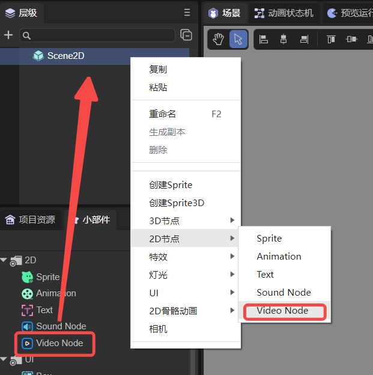

视频节点(VideoNode)
1. LayaAir IDE中使用视频节点
1.1 创建VideoNode
如图1-1所示，可以在层级窗口中右键进行创建，也可以从小部件窗口中拖拽添加。

（图1-1）
1.2 属性介绍
在IDE中，将VideoNode节点添加到场景编辑的视图区后，属性面板中VideoNode的专属属性如下图所示：

（图1-2）
它只有一个Source属性，将视频文件添加到Source中即可。
1.3 脚本控制VideoNode
在1.2节中，将视频文件添加到Source后，是无法自动播放的，需要用代码进行控制。在Scene2D的属性设置面板中，增加一个自定义组件脚本。然后，将VideoNode拖入到其暴露的属性入口中。下面给出一个示例代码，实现脚本控制VideoNode：
const { regClass, property } = Laya;
@regClass()
export class NewScript extends Laya.Script {
@property({ type: Laya.VideoNode })
public video: Laya.VideoNode;
constructor() {
super();
}
// 组件被激活后执行，此时所有节点和组件均已创建完毕，此方法只执行一次
onAwake(): void {
// 鼠标点击触发播放
Laya.stage.on(Laya.Event.MOUSE_DOWN, () => {
Laya.loader.load("resources/layaAir.mp4").then(() => {
this.video.play(); //播放视频
});
})
}
}
如果是在LayaAir IDE中运行，则VideoNode无需通过事件触发播放。但是在Chrome中，自动播放只允许静音自动播放。只有用户进行交互（单击、双击等）后，才允许自动播放声音。
2. 代码创建VideoNode
如果不想让VideoNode节点一开始就在舞台上，而是在要用的时候才添加，这就要通过代码来创建了。在Scene2D的属性设置面板中，增加一个自定义组件脚本，示例代码如下：
const { regClass, property } = Laya;
@regClass()
export class NewScript extends Laya.Script {
//declare owner : Laya.Sprite3D;
constructor() {
super();
}
/**
* 组件被激活后执行，此时所有节点和组件均已创建完毕，此方法只执行一次
*/
onAwake(): void {
let video = new Laya.VideoNode;
//添加到舞台
Laya.stage.addChild(video);
video.pos(200,200); //设置位置
video.source = "resources/layaAir.mp4"; //设置视频源文件
video.play(); //开始播放
}
}